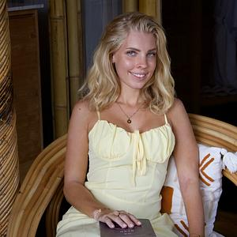
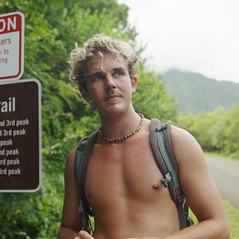
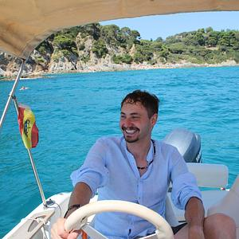
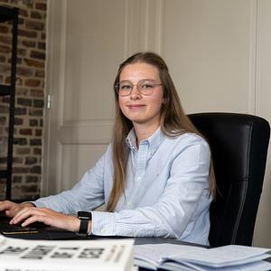
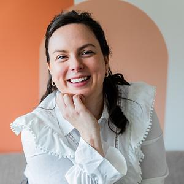
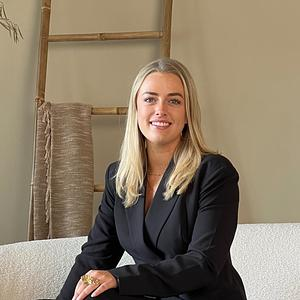
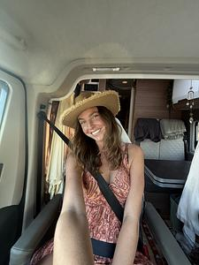
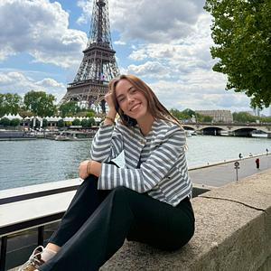
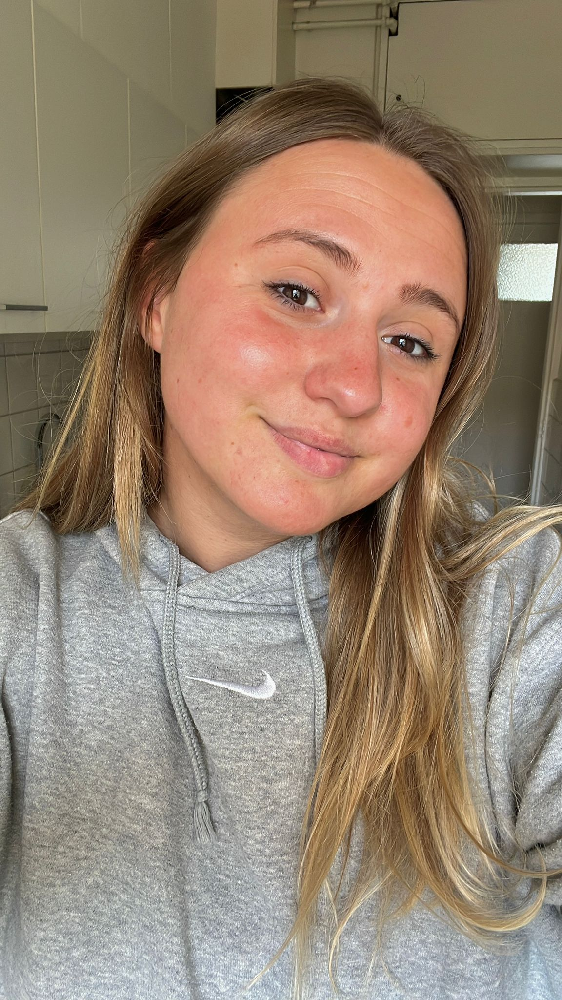
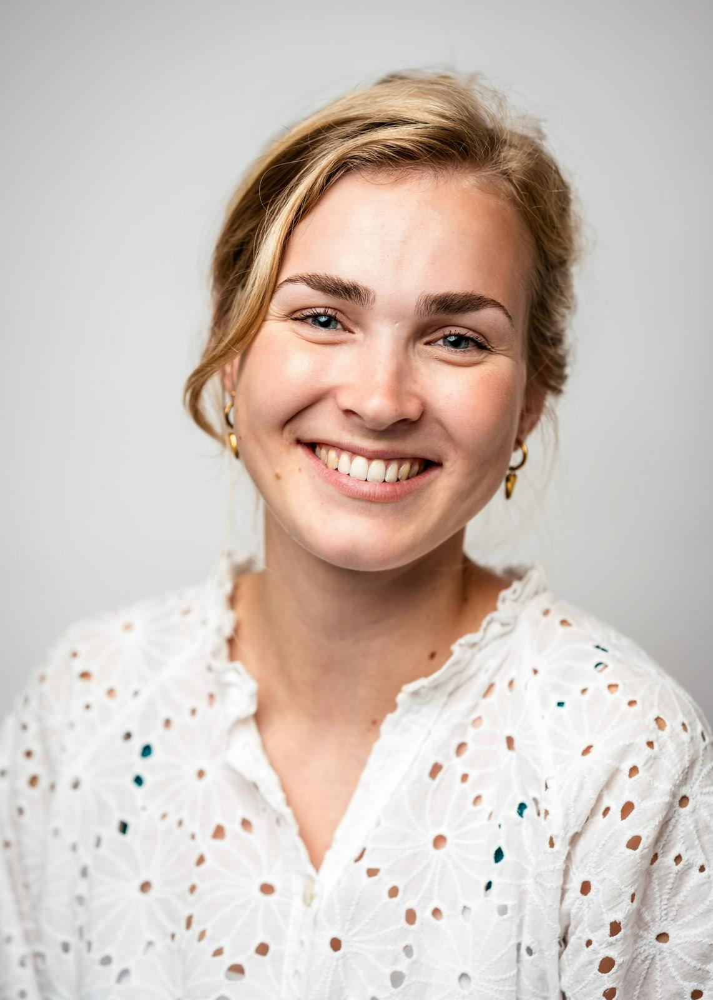

Wij zijn mensen die zelf de sprong hebben gewaagd en jou helpen hetzelfde te doen, met begeleiding, eerlijkheid en resultaat.
Ieder teamlid heeft zelf de stap naar remote werken gezet. Dat maakt het verschil.

Roos reisde 4 jaar de wereld rond en werkte via 12 verdienmodellen, maar zonder begeleiding. Dat gemis inspireerde haar om Ik Wil Remote op te richten: zodat anderen die stap wél met de juiste ondersteuning kunnen zetten.

Luc jaagt zijn droom na met lef en doorzettingsvermogen en neemt anderen mee in dat proces. Hij deelt zijn ervaringen eerlijk en transparant, zowel successen als uitdagingen.

Wesley zorgt ervoor dat deelnemers de juiste stappen zetten en op koers blijven. Hij is het aanspreekpunt voor voortgang en succes binnen het traject.

Maud begeleidt deelnemers op hun pad naar remote werken en zorgt dat ze de tools en mindset hebben om door te groeien, ook als het even moeilijk gaat.

Nadine coacht deelnemers in de kunst van het afspraken maken, een essentiële skill voor iedereen die remote klanten wil aantrekken en een eigen inkomen wil opbouwen.

Lisanne leert deelnemers alles over werken als Virtual Assistant: van de juiste tools tot het vinden van de eerste klant. Een concrete en bewezen route naar remote inkomen.

Zoë is expert in User Generated Content en begeleidt deelnemers bij het opbouwen van een inkomen als UGC creator, een van de snelst groeiende remote beroepen van dit moment.

Nova coacht deelnemers bij het opzetten van een Social Media Management business. Ze deelt haar kennis over strategie, content en klantrelaties op een praktische manier.
Melany beheert het vacatureaanbod en koppelt remote werkzoekenden aan passende kansen bij bedrijven die op zoek zijn naar talent op afstand.

Isa staat klaar voor al je vragen en zorgt dat je altijd snel en vriendelijk geholpen wordt. Ze is het eerste aanspreekpunt voor deelnemers die ondersteuning nodig hebben.

Danique helpt deelnemers snel verder als ze ergens tegenaan lopen. Met een scherp oog voor detail en een warm karakter zorgt ze dat niemand met vragen blijft zitten.
Ik Wil Remote helpt ambitieuze mensen om locatie-onafhankelijk te werken en verdienen, zodat ze eindelijk hun eigen tijd kunnen indelen, de wereld kunnen ontdekken en niet meer vastzitten aan een 9-tot-5. Wij geloven dat iedereen die dat echt wil, die stap kan zetten, mits ze de juiste begeleiding hebben.
Roos reisde vier jaar lang door de wereld. Ze werkte vanuit Bali, Portugal, Zuid-Amerika en tientallen andere plekken. In die periode probeerde ze twaalf verschillende verdienmodellen uit: van virtual assistance tot content creatie, van social media management tot appointment setting.
Wat ze daarin steeds miste, was begeleiding. Niemand die haar vertelde welk model bij haar paste. Niemand die haar corrigeerde als ze de verkeerde kant op ging. Ze leerde alles op de harde manier, door vallen en opstaan, maanden langer dan nodig.
Dat is het gat dat Ik Wil Remote vult. Niet een cursus die je informatie geeft en je daarna alleen laat. Maar echte begeleiding, van mensen die het zelf hebben gedaan, die weten waar je op vastloopt en hoe je er doorheen komt.
Onze visie: Vrijheid is geen beloning voor later. Het is een keuze die je nu kunt maken, als je de juiste begeleiding hebt. Iedereen die dat echt wil en bereid is om te werken, kan de stap naar locatie-onafhankelijk werken zetten. Wij zijn er om dat te bewijzen.
Niet alleen mooie woorden, maar principes die we elke dag in de praktijk brengen.
We gaan pas voor 100% als jij het resultaat hebt waar je voor tekende. Resultaatgarantie is geen marketingtruc, het is onze belofte.
Geen beloftes die we niet kunnen waarmaken. We delen wat werkt en wat niet, inclusief onze eigen fouten en lessen.
Geen one-size-fits-all cursus. Elk traject is afgestemd op jouw situatie, skills en doelen. Jij bent geen nummer.
We geloven dat locatie-onafhankelijk werken niet een privilege is voor een select clubje, maar een haalbaar doel voor iedereen die het echt wil.
Sluit je aan bij honderden mensen die al de stap hebben gezet naar een leven op hun eigen voorwaarden.
Plan een Match call